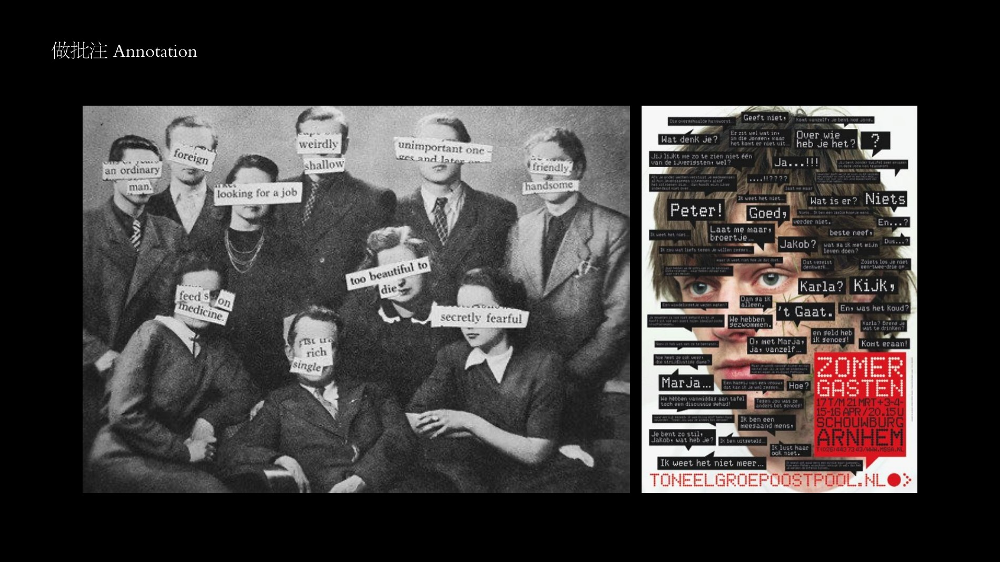
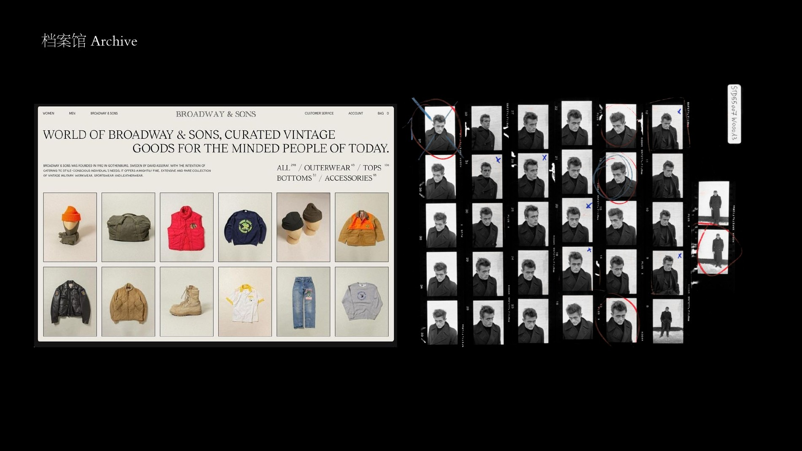
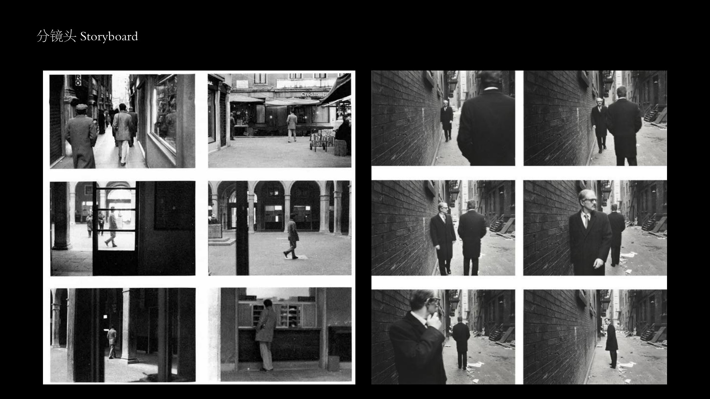
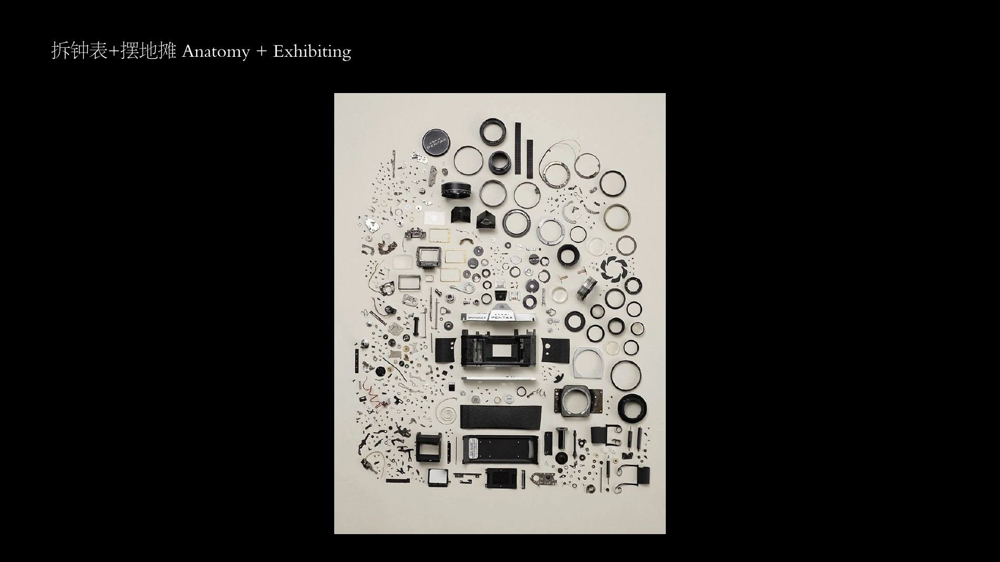
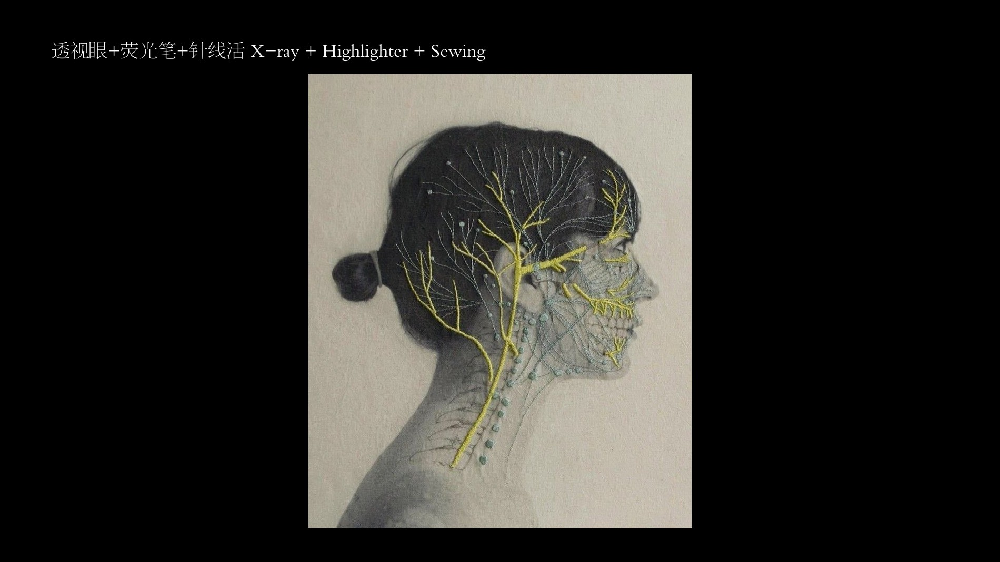

视觉实验指南
这份手册把图像、材料、叙事与展示方式整理成可以试做的实验入口。我用日常动作和工具为方法命名，帮助学习者在一个项目停滞时，选择新的观察尺度、操作方式或呈现媒介。
案例图像为每种操作提供观看和讨论的对象。我的工作在于选择案例、整理方法、建立教学语言和编排阅读顺序，案例作者与学习者自己的实验成果分别署名。











这份手册把图像、材料、叙事与展示方式整理成可以试做的实验入口。我用日常动作和工具为方法命名，帮助学习者在一个项目停滞时，选择新的观察尺度、操作方式或呈现媒介。
案例图像为每种操作提供观看和讨论的对象。我的工作在于选择案例、整理方法、建立教学语言和编排阅读顺序，案例作者与学习者自己的实验成果分别署名。




